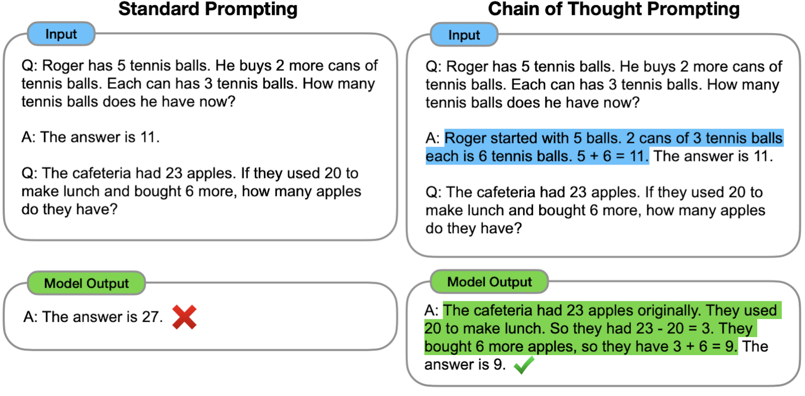

LLMs Transforming Finance: The New Quant#
Duration: 40 minutes reading
Learning Objectives:
Survey 6 categories of LLM applications in quantitative finance
Understand why model scale matters for financial tasks
Connect research papers to practical tools
Recognize the productivity gains from AI assistance
The Emergence of the “New Quant”#
📚 Literature: Fu, X. (2025). “The New Quant: A Survey of LLMs in Financial Prediction and Trading.” arXiv:2510.05533
This comprehensive survey maps the landscape of LLM applications in finance. Fu organizes the field into six categories: sentiment and event extraction, numerical reasoning, multimodal understanding, retrieval-augmented generation, agentic systems, and domain-specific models. The key insight: LLMs are not replacing quants—they’re augmenting them, creating a new type of practitioner who combines traditional quantitative skills with AI-powered analysis.
A growing body of research suggests the emergence of a “new quant”—practitioners who leverage large language models to amplify their analytical capabilities. Empirical evidence supports this shift:
Study |
Finding |
|---|---|
Brynjolfsson (2025) |
15% average productivity increase for knowledge workers using AI assistance |
Kwa (2025) |
AI task-completion capability doubling every 7 months |
For quantitative finance practitioners who routinely process documents, analyze market data, write code, and synthesize research, these tools represent a fundamental change in how work gets done.

The generative AI technology stack spans infrastructure, data, LLMs, APIs, and applications. Understanding this stack helps contextualize where different LLM-finance applications fit.
1. Sentiment & Event Extraction#
The most direct application of LLMs in finance: reading text and extracting trading signals.
The Lopez-Lira Finding#
📚 Literature: Lopez-Lira, A. (2023). “Can ChatGPT Forecast Stock Price Movements? Return Predictability and Large Language Models.”
This paper tested whether ChatGPT could predict stock returns by classifying news headlines as “good news,” “bad news,” or “uncertain.” The headline finding: GPT-4’s sentiment scores correlate positively with next-day returns and outperform traditional sentiment metrics. Crucially, smaller models like BERT showed no predictive power—only the largest models captured this return predictability. This “scale matters” insight explains why the field shifted from fine-tuned small models to prompting frontier models.
Key insight: The same headline classified by BERT and GPT-4 produces different signals—and only GPT-4’s signal predicts returns.
LLM Embeddings for Return Prediction#
📚 Literature: Chen, L., Kelly, B., & Xiu, D. (2022). “Return Prediction with Large Language Models.”
While Lopez-Lira uses sentiment labels, Chen et al. use embeddings—the dense vector representations that LLMs produce internally. They find that LLM embeddings significantly outperform simpler NLP methods (bag-of-words, Word2Vec) and technical signals across 16 global equity markets and 13 languages. Benefits are most pronounced for articles featuring negation or complex narratives—exactly where simpler methods fail.
We explore text representations — from bag-of-words to embeddings — in Discussion 4: Text Representation & Embeddings, and replicate a portion of this analysis in Homework 2.
2. Numerical & Economic Reasoning#
LLMs can do more than read—they can reason about quantitative problems.
Chain-of-Thought Prompting#
📚 Literature: Wei, J. (2022). “Chain-of-Thought Prompting Elicits Reasoning in Large Language Models.”
This paper showed that prompting models to produce explicit step-by-step reasoning unlocks performance on math and logic problems. The technique is simple: instead of asking for an answer directly, you prompt with “Let’s think step by step” or provide examples that show the reasoning process. Chain-of-thought is now standard practice in commercial LLM products and foundational for finance applications.

Standard prompting asks for direct answers, while chain-of-thought prompting elicits step-by-step reasoning. This technique is foundational for financial analysis tasks requiring multi-step logic. Source: Google Research
FinCoT: Finance-Specific Reasoning#
📚 Literature: Nitarach, N. (2025). “FinCoT: Chain-of-Thought Reasoning for Financial Analysis.”
FinCoT adapts chain-of-thought for finance by injecting expert-defined reasoning blueprints into prompts. Evaluated on CFA-style questions across financial domains, FinCoT improved accuracy from 63% to 80% on a general 8B model—demonstrating that careful prompt engineering can substantially enhance performance without fine-tuning.
Practical takeaway: Before fine-tuning, try better prompts. FinCoT achieves significant gains just by structuring the reasoning process.
3. Multimodal Understanding#
Modern LLMs can process images, enabling new applications.
Vision Models for Financial Documents#
Vision-language models like GPT-4V and Claude 3 can:
Read earnings tables directly from images
Interpret financial charts and graphs
Extract data from PDFs that resist text extraction
Process historical documents with complex layouts
Use case: An analyst receives a quarterly report as a scanned PDF. Instead of manual data entry, a vision model extracts the key figures directly, maintaining the semantic context that pure OCR would lose.
4. Retrieval-Augmented Generation (RAG)#
RAG connects LLMs to external knowledge bases, extending them beyond their training data.
NeuSym-RAG for Financial Documents#
📚 Literature: Cao, Y. (2025). “NeuSym-RAG: A Hybrid Neural-Symbolic Framework for Financial Document Q&A.”
Financial documents combine structured tables with unstructured narrative—a challenge for pure vector search. NeuSym-RAG addresses this with a hybrid approach: neural retrieval for narrative sections, symbolic SQL-based retrieval for tabular data. The framework outperforms pure neural methods on financial document question answering.

The augmented LLM building block combines retrieval, tools, and memory to extend model capabilities beyond training data. RAG systems like NeuSym-RAG build on this foundation. Source: Anthropic
Asset Embeddings#
📚 Literature: Gabaix, X. (2025). “Asset Embeddings: Large Language Models for Financial Asset Representation.”
Just as words appearing in similar contexts get similar embeddings, assets held together by investors get similar asset embeddings. Gabaix applies the word embedding paradigm to financial assets: firms that appear together in portfolios receive similar vector representations. The follow-up work demonstrates that these firm embeddings explain credit spreads better than ratings or distance-to-default.
Key insight: The embedding techniques that power LLMs can represent assets, not just text—opening new approaches to similarity analysis and clustering.
5. Agentic Systems#
Agents combine LLM reasoning with real-world actions, enabling autonomous workflows.
Trading-R1: RL for Trading Decisions#
📚 Literature: Xiao, Y. (2025). “Trading-R1: Reasoning-Guided LLM for Financial Trading.”
While reasoning LLMs excel at math and coding, their unguided reasoning often drifts away from market-relevant analysis. Trading-R1 uses reinforcement learning to train LLMs for trading decisions, achieving Sharpe ratios of 1.6–2.7 across major equities while generating structured, evidence-backed investment theses. The model learns to focus its reasoning on the factors that actually predict returns.
Deep Research Agents#
📚 Literature: Du, L. (2025). “DeepResearch Bench: Evaluating Deep Research Agents.”
Deep Research Agents produce analyst-grade, citation-rich reports by autonomously searching, reading, and synthesizing information. Du introduces the first comprehensive benchmark for these systems. ChatGPT’s Deep Research mode exemplifies this capability—give it a complex question, and it conducts multi-step research before producing a coherent report.
The ReAct Pattern#
📚 Literature: Yao, S. “ReAct: Synergizing Reasoning and Acting in Language Models.”
ReAct established the paradigm that underlies every modern agent: interleaving reasoning traces (“thoughts”) with actions. When an LLM explains its reasoning before acting, it makes fewer errors and recovers better from mistakes. This pattern powers Claude Code, ChatGPT’s tool use, and all major agentic frameworks.

The ReAct pattern interleaves reasoning traces (thoughts) with actions, enabling agents to explain their logic before acting. This pattern underlies modern agent frameworks including Claude Code and ChatGPT’s tool use. Source: Google Research
6. Domain-Specific Models#
Some applications require models trained specifically on financial data.
BloombergGPT#
📚 Literature: Wu, S. (2023). “BloombergGPT: A Large Language Model for Finance.”
Bloomberg trained a 50-billion parameter model on their proprietary dataset of 363 billion tokens of financial text. BloombergGPT significantly outperforms general-purpose LLMs on financial tasks while maintaining competitive performance on standard benchmarks. The model demonstrates that domain-specific pre-training can yield substantial improvements.
Open-Source Alternative: FinGPT#
While BloombergGPT remains proprietary, the AI4Finance Foundation has released FinGPT as an open-source alternative:

FinGPT’s full-stack framework demonstrates how practitioners can build domain-specific financial LLMs using open-source tools and lightweight fine-tuning techniques like LoRA. Source: AI4Finance Foundation
ChronoGPT: Eliminating Lookahead Bias#
📚 Literature: He, X., Lv, J., Manela, A., & Wu, R. (2025a). “ChronoGPT: Chronologically Consistent Language Models.”
Standard LLMs are trained on text that includes future information relative to any historical backtest date—creating data leakage. ChronoGPT trains only on text available at each point in time, eliminating lookahead bias. For backtesting applications, this is critical: using a model trained on 2024 data to analyze a 2020 headline introduces forward-looking information that wouldn’t have existed at the time.
📚 Literature: He, X., Lv, J., Manela, A., & Wu, R. (2025). “Instruction-Tuning ChronoGPT for Chat Capabilities.”
The follow-up work adds instruction tuning to ChronoGPT, creating chat-capable models that maintain chronological consistency. Each model has a clearly defined knowledge cutoff date, enabling realistic historical analysis.
Key insight for practitioners: When backtesting LLM-based strategies, standard models introduce forward-looking bias. ChronoGPT offers a methodologically sound alternative.
What This Means for Quant Practitioners#
The papers above suggest several practical implications:
Scale matters. The Lopez-Lira finding—that only frontier models capture return-predictive sentiment—means practitioners should use the best available models for signal extraction, not fine-tuned small models.
Prompts before fine-tuning. FinCoT’s 17-percentage-point improvement from better prompts suggests exhausting prompt engineering before investing in fine-tuning.
Hybrid approaches work. NeuSym-RAG’s combination of neural and symbolic retrieval outperforms either alone—a pattern likely to generalize across financial applications.
Agents are ready. Trading-R1’s Sharpe ratios and Deep Research’s analyst-grade reports demonstrate that agentic systems can perform real financial work, not just demos.
Temporal consistency matters. ChronoGPT addresses a methodological problem that most practitioners haven’t considered: standard LLMs leak future information into historical analysis.
Discussion Questions#
Scale vs. fine-tuning: Given the Lopez-Lira finding, when would you still choose to fine-tune a smaller model rather than prompt a frontier model?
Lookahead bias: How would you design a backtesting framework that uses LLMs without introducing forward-looking bias? Would you always use ChronoGPT, or are there cases where standard models are acceptable?
Agentic trading: Trading-R1 achieves strong Sharpe ratios in research settings. What additional challenges would you face deploying such a system in production?
RAG vs. fine-tuning: When building a financial Q&A system, how would you decide between RAG (retrieving from documents) and fine-tuning on financial text?
Hands-On: Live Demo#
Let’s see Lopez-Lira’s core methodology in action. We’ll classify 5 headlines with GPT-4o-mini and examine the sentiment scores:
from openai import OpenAI
client = OpenAI()
headlines = [
"Apple Reports Record Q4 Earnings, Beats Analyst Expectations",
"Fed Signals More Rate Hikes Ahead, Markets Tumble",
"Tesla Stock Plunges After Disappointing Delivery Numbers",
"Microsoft Cloud Revenue Grows 27%, Exceeding Forecasts",
"Bank of America Warns of Recession Risk in 2024",
]
for headline in headlines:
response = client.chat.completions.create(
model="gpt-4o-mini",
messages=[
{"role": "system", "content": "You are a financial analyst. Classify news as 'good news', 'bad news', or 'uncertain'."},
{"role": "user", "content": f"Headline: {headline}"},
],
)
print(f"{headline[:50]}... → {response.choices[0].message.content}")
Next Steps#
Now that you’ve seen the landscape of LLM applications in finance, let’s build our sentiment classification pipeline from scratch. Continue to API and Structured Outputs.